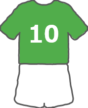

チーム紹介
チーム概要
長岡京市を拠点に活動するシニア向けサッカーチームです。
1973年、地元少年団である長岡京SSの指導員を中心に社会人チームを創設。
1988年、人員増加に伴いBチームをｱ種に追加登録。（現在のO40チーム）
1993年、高齢化に伴いシニアチームをO40に追加登録。（現在のO50チーム）
2024年、高齢化に伴いBチームはO40に、シニアチームはO50にカテゴリー変更。
現在はO40カテゴリーとO50カテゴリーに分かれて活動しています。
生涯サッカーをモットーに、初心者や競技ブランクのある方もプレーしています。
体験参加も随時募集していますので、ご希望の方はフォームよりお申し込みください。
- 活動日：木曜日（不定期）と土曜日
- メンバー数：O40が約25名、O50が約15名
ユニフォーム

ホームは緑白緑、アウェーは白白緑です。（パンツとソックスは共通）
ユニフォームは個人購入になります。
諸費用
- 入会金：2,000円（入会時のみ）
- 年会費：3,000円/年
- 活動費：25,000円/年（練習生は10,000円/年）
- その他：ユニフォーム代（別途）